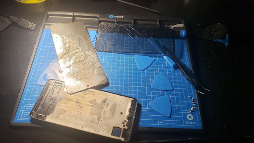

Early CAD Design.

While this is not exactly just a personal project (moreso a high school assignment), I wanted to put this project here since the project was meant to challenge myself and was also something that I wanted to make on my own. This was my attempt at modelling a mask from BIONICLE, except where it could hinge open (similar to Iron Man's helmet). This project was modelled in TinkerCAD, and was the first non-tutorial "open" project that I made using CAD. TinkerCAD was a good start, but it was failry limited for CAD from what I remember.
Electronics Teardowns/Repair Attempts.
If I am able to, I prefer to repair electronics and give them a second chance instead of throwing them away. I believe that broken electronics have potential to be used again, and that many are thrown away and cause a buildup of e-waste. In the end, sometimes the repairs work and other times they do not. But they're still learning experiences. One successful repair attempt was on my father's phone. The phone was accidentally dropped, and the screen became cracked and unresponsive. I ordered a replacement screen and followed an iFixit guide to repair the phone.
The process involved unscrewing and disconnecting a few wires and components. Removing the screen was the most difficult part, as the screen was already broken so it would continue breaking and made the removal process more difficult. However, the screen was pried off with a card. The replacement screen was installed and the phone was reassembled, and the result was the phone screen was working again.

In additon to this repair, I have opened up a number of other electronics. Although these "projects" were not completed, they still gave me more knowledge of the internals of electronics. One of the devices, a Samsung Galaxy S6, had in inflated (?) battery, so I had removed it. It was actually my first time opening up a phone. The images for the other devices are below.

Clicking on the images will just redirect you to this same page.